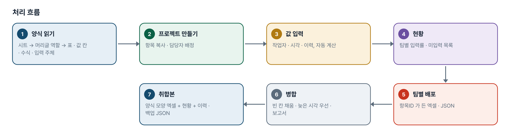
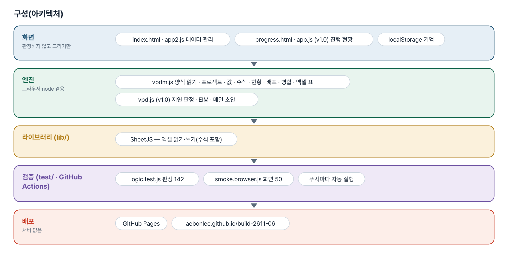
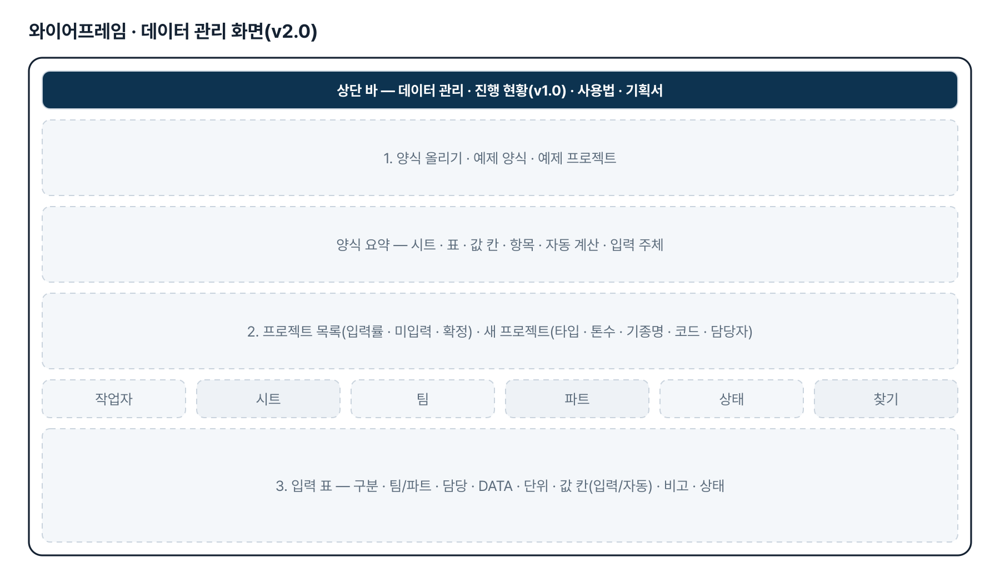
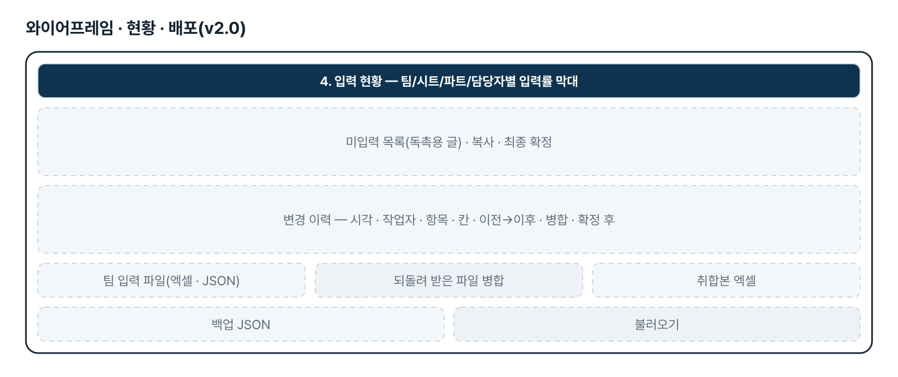
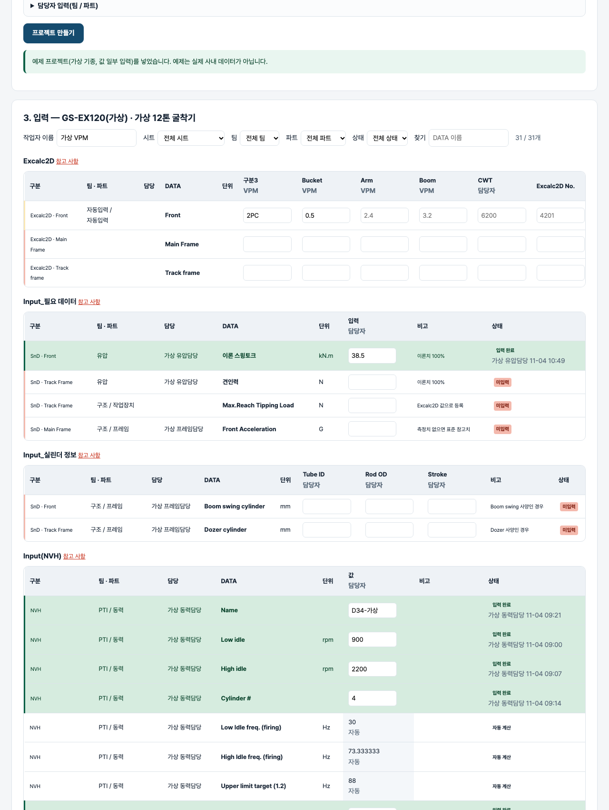

기획서 내려받기
파이프라인 · 아키텍처 · 와이어프레임 · 개발일지가 들어간 워드 문서입니다. 버전마다 따로 남깁니다.
| 버전 | 날짜 | 바뀐 점 | 파일 |
|---|---|---|---|
| v1.0 | 2026-11-02 | 첫 판 — 판정 7종·기종/담당자 현황·EIM 요약·담당자별 요청 메일 초안·산출물 미등록·엑셀 내보내기 / 기획서 워드 판·파이프라인·아키텍처·와이어프레임 추가 | 워드 내려받기 |
| v2.0 | 2026-11-04 | 기획자 요청(2026-11-03 패들릿 「Vpd math load 데이터 관리툴」)으로 주제 교체 — math & load 데이터 관리(양식 → 프로젝트 → 팀별 입력 · 현황 · 배포 · 병합 · 취합본) / 엔진 js/vpdm.js(새) · 화면 index.html · js/app2.js(새) · v1.0 도구는 progress.html 로 이동(그대로) / 테스트 판정 71→142 · 화면 23→50 | 워드 내려받기 |
요구사항과 구현
| 기획서 요구 | 구현 |
|---|---|
| (v2.0) 공통 math & load 데이터를 DB 처럼 관리 | 양식 → 프로젝트 → 항목(시트·표·값 칸·팀/파트·담당·단위·비고·수식) 구조, 브라우저 저장 + JSON 백업. 서버 DB 는 다음 단계(§4) |
| (v2.0) 양식 엑셀(프로젝트 생성 · Excalc2D · 필요 데이터 · 실린더 · NVH · Mass · 추가 데이터 · Back up) | parseTemplate — 머리글 역할(구분·팀·파트·담당자·DATA·단위·비고·필수)로 표를 찾고 나머지 머리글을 값 칸으로. 위 줄의 「VPM입력/담당자 입력」은 입력 주체. 한 시트 여러 표 · 참고 사항 · 「추가/삭제」 끝 · 값 칸 없는 참고 표 |
| (v2.0) 프로젝트 생성(기종 타입 · 톤수 · 기종명 · 기종코드 · 생성일 · 최종확정일) · 담당자 입력(팀/파트) | createProject — 필수 칸 · 같은 코드 거름 · 팀/파트 담당자 자동 배정 · confirm 으로 최종확정일 |
| (v2.0) 자동 계산(NVH 수식) | evalFormula — 사칙연산 · 같은 시트 셀 참조 · IF 문자 비교. 참조 값이 비면 「참조 값 대기」, 모르는 함수는 「수식 미지원」 |
| (v2.0) 취합 | 진행률(팀·시트·파트·담당자별 완료·일부·미입력·자동), 미입력 목록 글, 변경 이력, 취합본 엑셀(양식 모양 + 현황 + 이력) |
| (v2.0) 배포 | 팀별 입력 파일(엑셀·JSON, 항목ID 열) → 되돌려 받아 병합: 빈 칸은 채움 · 같은 값 넘김 · 둘 다 있으면 수정시각이 늦은 쪽(시각 없으면 내 값) · 보고서 |
| (v1.0) 검증항목 진행 현황 · EIM 요약 · 요청 메일 초안 | progress.html 로 옮겨 그대로 유지 |
그림으로 보기





개발일지
2026-11-13 · 마무리 — 로그인 · 게시판 · 첫 화면(판 2026-11-13.1)
- 과정 마무리 묶음을 붙임(마산 2차수 과제와 같은 키트) — 로그인 전 첫 화면(사진 3장 · 기능 · 사용 순서 · 기획서), 회원가입 → 사용 신청 → 관리자 승인, 게시판 · 새 글 알림, 내 정보, 관리(구성원 승인 · 첫 화면 모양)
- Supabase 표 · 함수 · 정책은 전부 build261106_ 로 시작(auth.sql · board.sql · site.sql). 과정용 프로젝트에 적용했고, supabase/README.md 순서대로 본인 프로젝트로 옮길 수 있음
- 도구의 계산 · 판정 · 저장 방식은 그대로(업무 자료는 지금처럼 브라우저 안에서만 처리). 기획서 · 사용법 쪽은 로그인 없이 읽음
- 내 PC(파일로 열기 · localhost)에서는 로그인을 건너뜀 — 주소 끝에 ?auth=1 을 붙이면 로그인 화면을 볼 수 있음
2026-11-04 · v2.0 math & load 데이터 관리
- 추가 요청 원문(패들릿 게시물 4129581689, 2026-11-03 밤): 「프로젝트를 해당 건에 한정하여 변경하고자 합니다. 검증진행을 위한 math &load 데이터 중 여러 팀에서 공통으로 사용하는 데이터들이 있는데 해당 데이터들을 db관리하고 취합 및 배포할수있는 보조 툴 개발하고싶습니다. 참고 테이터들에 대해서는 엑셀파일로 첨부합니다.」 + 첨부 양식(프로젝트 생성 · Excalc2D · Input_필요 데이터 · Input_실린더 정보 · Input(NVH) · Mass · Mass(추가 데이터) · Mass(Back up)) — 값은 비어 있고 담당자는 홍길동 자리표시, 저장소에 넣지 않음
- 엔진 vpdm.js — 양식 읽기(머리글 역할 · 값 칸 · 수식 · 입력 주체 · 여러 표 · 참고 사항), 프로젝트 · 값 · 자동 계산(evalFormula) · 현황 · 미입력 글 · 팀 배포 · 병합 · 취합본 · 예제(가상)
- 화면 index.html · app2.js — 양식 · 프로젝트 · 입력 · 현황 · 배포. v1.0 은 progress.html 로.
- 판정 테스트 142 · 화면 테스트 50 통과
2026-11-02 · 첫 판
- 패들릿 build02 이정우 「VPD 운영 업무 보조 에이전시」를 작업 지시서(CLAUDE.md)로 옮기고 구현
- 판정 엔진 vpd.js — 정리·검증, 판정 7종과 근거, 집계, EIM 요약, 대상 추출 5종, 메일 치환, mailto
- 화면 — 현황·필터·EIM 복사·템플릿 편집·초안 카드·선택 AI·엑셀 6시트
- 판정 테스트 71 · 화면 테스트 22 통과